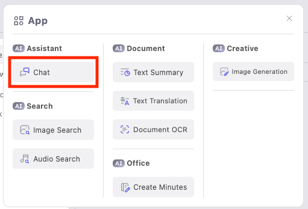
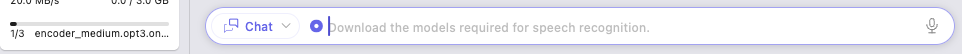
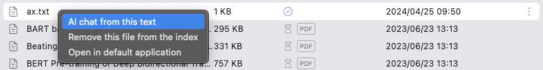
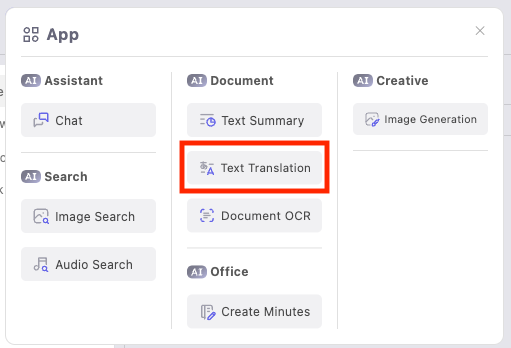
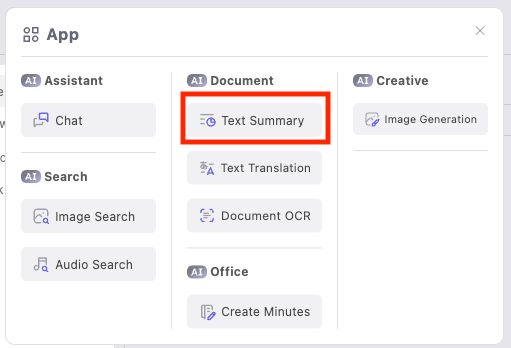
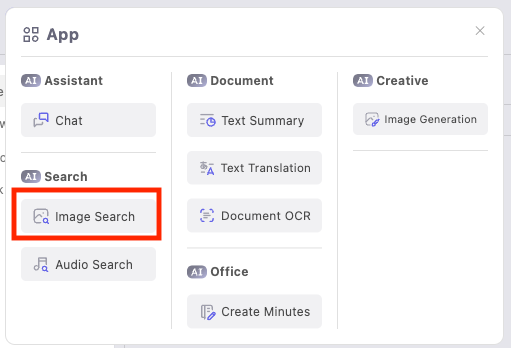
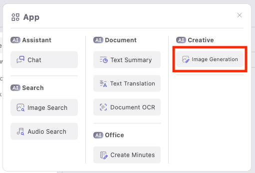
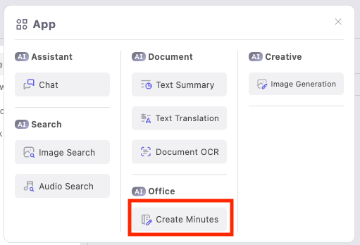
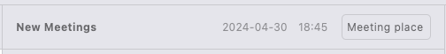
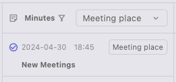

Screen Configuration

Asking AI
- Click the application button in the upper left corner of the screen to open the application selection screen and select "Chat"

- Enter your question in the chatbox at the bottom of the screen, and click the send button (or press Ctrl + Enter on Windows, Cmd + Enter on macOS).

- To use voice input
- Click the microphone icon on the right side of the chat box.

The first time you click the microphone icon after installing our app, the download of the AI model required for voice recognition will start.
Voice input will be available after the download is completed.

- Speak your question into the microphone.
- Click the microphone button again to complete the voice input.
- Click the microphone icon on the right side of the chat box.
- To use voice input
- The answer from AI will be displayed.
Asking Questions About the Information in the Document Files
- Right-click the file and select "AI chat from this text".

- Enter your question and send it.

- The answer generated based on the contents of the related files by AI will be displayed.
Removing Document Files from the Index
- When you ask AI about the information in a document file, an index is created automatically. To remove a registered document file from the index, right-click on it and select "Remove this file from the index".

The AI status icon of the selected file becomes , indicating the removal is complete.
, indicating the removal is complete.
Translating Sentences
- Click the application button in the upper left corner of the screen to open the application selection screen and select "Text Translation"

- Enter the sentence you want to translate, and send it.
- The translation result by AI will be displayed.
Summarizing Document Files
- Click the application button in the upper left corner of the screen to open the application selection screen and select "Text Summary".

- Right-click on the file you want to summarize and click "Summary".

- The summarized result by AI will be displayed.
Translating Document Files
- Click the application button in the upper left corner of the screen to open the application selection screen and select "Text Translation".
- Right-click on the file you want to translate and click "Translation". Supported file formats include pdf, txt, md, docx, xlsx.

- The translation result by AI will be displayed. You can save the translation result as a file by pressing the "Save" button at the bottom right of the translation result.

Searching Images
Image search is available through the "Image Search" application. By right-clicking on an image file in the file view to register it in the index, you can perform a search for similar images. The search will be conducted on the indexed image files. You can search using texts or images.
Searching with Text
You can search for images similar to the search words.
- Click the application button in the upper left corner of the screen to open the application selection screen and select "Image Search".

- Enter the search words in the chat box and send them.
- The search results will be displayed in order of similarity. Clicking on the displayed search results will grid display all images in order of similarity.

Searching with Images
You can search for images similar to the selected image. The image must be registered in the index.
- Click the application button in the upper left corner of the screen to open the application selection screen and select "Image Search".
- Right-click on the image file you want to search and select "Similar searches on this image".

- The search results will be displayed in order of similarity. Clicking on the displayed search results will grid display all images in order of similarity.
Audio Search
Audio search is possible through the "Audio Search" app. Similar to image search, by indexing audio files, there are two search methods: text-based search and audio-based search.
Generating Images
- Click the application button in the upper left corner of the screen to open the application selection screen and select "Image Generation".

- Enter the outline of the image you want to generate and send it.
- The generated image result by AI will be displayed.

Taking Minutes
You can take minutes hands-free using voice recognition AI.
- Click the application button in the upper left corner of the screen to open the application selection screen and select "Create Minutes"

- Enter the meeting location in the "Meeting place" at the top right of the screen. You can also change the meeting name.

- Click the "Start recording" button at the bottom to start recording the minutes.

If you have not yet downloaded the AI model required for voice recognition, the download will start.
It will be available after the download is completed. - When you are finished recording, click the "Stop recording" button at the bottom to save the minutes.

Reviewing Recorded Minutes
You can review the recorded minutes by clicking on the minutes listed on the left side of the minutes screen.

Clicking the button on the right side of the recorded text allows you to correct the text.

Additionally, you can start recording the minutes again by clicking the "Start Recording" button at the bottom.